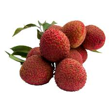
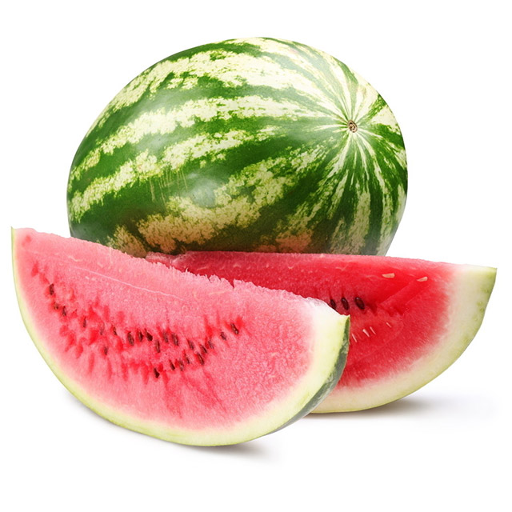

夏天的水果
荔枝

採收季節:
荔枝最主要的採收期為6~7月。
產地:
荔枝最主要的產地是在高雄。
營養價值:
荔枝性質溫和，所含的營養素有醣類、檸檬酸、維生素B群、維生素C、葉酸、磷、鉀及鎂等。
荔枝富有葡萄糖，有助血液的循環，加上有維生素C預防雀斑的發生，適合老年人、產婦及體質虛弱者。
每次食用荔枝，最好以300克為最高上限，若吃太多容易上火，易會造成食慾不振。
西瓜

採收季節:
西瓜最主要的採收期為5~9月。
產地:
台灣很多地方都有種植西瓜，其中產量最大的是雲林縣。
營養價值:
西瓜為冷涼的陰性水果，能去除身體的燥熱且解渴，適合用來預防中暑；另外，西瓜的維生素有助於維持頭髮秀美、肌膚健康。
西瓜中的鉀利尿作用強，能促進水分代謝，改善排尿及水腫，對腎炎很有幫助，但也因為西瓜的利尿作用很強，所以晚餐後或睡前建議少吃，以免夜裡頻尿。
西瓜不宜與蜂蜜同食，原因在於西瓜富含維他命C，遇上蜂蜜所含的銅等礦物質，會加速維生素C的氧化作用，因而使身體失去對原有營養成分的利用。
芒果
 採收季節:
採收季節:
芒果最主要的採收期為5~10月。
產地:
台南是台灣芒果最主要的產地。
營養價值:
芒果性質微涼裡面含有的營養成分醣類、繕食纖維、維生素A、維生素C 、葉酸、鈣、磷、鐵、鉀、鎂等微量元素。
芒果為著名熱帶水果之一，素有「熱帶果王」之稱。
芒果含有豐富的類胡蘿蔔素，對於眼睛及皮膚很有幫助，適合在飯後食用；其中芒果裡頭的維生素C含量較高，可以補充體內的維生素C的消耗。
回到水果王國
回 到 最 上 方